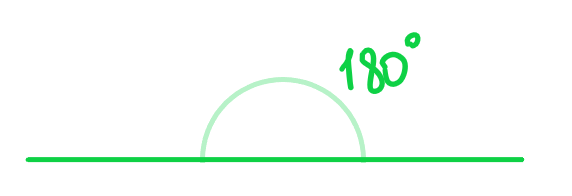

Геометрия - наука о фигурах и их взаимодействии друг с другом. Как весь мир состоит из мельчайших частиц, так и в геометрии все фигуры из чего-то состоят. Самыми простыми элементами в геометрии являются прямые и точки.
Рисунок 1 - красная точка принадлежит прямой, а синяя - нет.
Рисунок 2 - красные прямые пересекаются с черной прямой, но не пересекаются друг с другом.
Углы и их свойства
Угол - это геометрическая фигура, которая ограничена двумя лучами (луч - это геометрическая фигура, представляющая собой линию, которая имеет начало, но не имеет конца). Углы измеряются градусами. Углы бывают:
- острыми (<90°) (синий)
- тупыми (>90°) (красный)
- прямыми (=90°) (оранжевый)
Рисунок 3 - разновидности углов

Рисунок 4 - развернутый угол (180 градусов)
Смежные и вертикальные углы
Рисунок 5 - смежные углы.
Свойство смежных углов: Смежные углы - это такие, которые лежат на одной прямой, а второй они отделяются. Смежные углы всегда в сумме дают 180 градусов, потому что вместе они образуют развернутый угол.

Рисунок 6 - вертикальные углы
Свойство вертикальных углов: Вертикальные углы образуются при пересечении двух прямых. Они равны между собой (синие углы равны синим, оранжевые - оранжевым).
Примеры задач
Задача 1: Найти красный угол

Красный и зеленый углы являются смежными, а значит в сумме дают 180 градусов. Чтобы найти один из них, необходимо из общей суммы, то есть из 180 вычесть другой, известный, угол:
180° − 54° = 126°
Задача 2: Найти зеленый угол
Данные углы в сумме дают 180 градусов. Чтобы найти один из них, необходимо из общей суммы, то есть из 180 вычесть другой, известный, угол:
180° − 152° = 28°
Задача 3: Сумма углов в треугольнике
Проведем две черные параллельные прямые. Красную и синюю секущую проведем так, чтобы они пересекали одну черную прямую в одной общей точке. Розовый, оранжевый и зеленый углы (сверху на рисунке) в сумме дают 180 градусов, так как составляют вместе развернутый угол.
В треугольнике, который образовался двумя секущими и одной черной прямой, появляются такие же розовый и зеленый углы по свойству параллельности. Тогда в нем такие же три угла, что и те, которые были ранее, а значит также дают в сумме 180 градусов.
α + β + γ = 180°
Задача 4: Угол между биссектрисами
В треугольнике АВС проведены биссектрисы АЕ и СD, которые пересекаются в точке О. Угол В равен 48 градусов. Найдите угол АОС.
Решение:
2x + 2y + 48° = 180° → 2x + 2y = 132°
x + y = 66°
Рассмотрим треугольник АОС:
x + y + ∠AOC = 180° → 66° + ∠AOC = 180° → ∠AOC = 180° − 66° = 114°
Угол между двумя биссектрисами треугольника равен 90° + α/2, где α - угол, из которого биссектриса не проводилась.